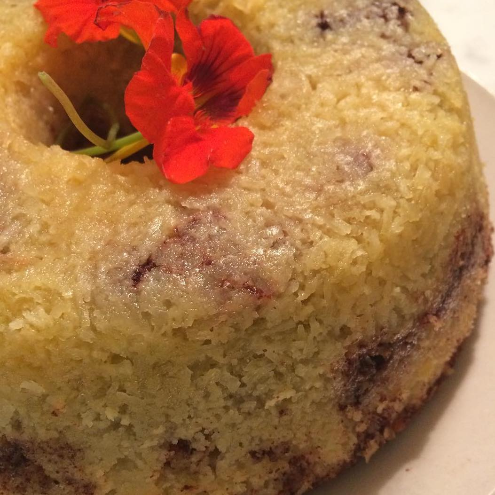

Kanelbullesockerkaka
- Ca 12 bitar
- 2 dl strösocker
- 2 ägg
- 2 tsk vaniljsocker
- 2 tsk bakpulver
- 3 dl vetemjöl
- 100 g smör, smält
- 2 dl mjölk
- Fyllning
- 2 tsk mald kanel
- ¾ dl strösocker
Gör så här:
Sätt ugnen på 180 grader.
Vispa strösocker och ägg pösigt i en bunke.
Blanda vaniljsocker, bakpulver och vetemjöl.
Rör ner det i äggblandningen ihop med smör och mjölk. Rör snabbt ihop allt till en slät smet.
Blanda ihop kanel och strösocker i en skål.
Häll 1/3 av smeten i en smord och sockerkakasform, ca 1 ½ liter. Strö över 1/3 av blandningen i formen.
Häll över hälften av smeten som är kvar i bunken. Pudra på hälften av kanel- och sockerblandningen. Häll över den sista smeten och pudra över den sista kanel- och sockerblandningen.
Grädda kakan längst ner i ugnen i 43–45 min. Låt den svalna i formen innan du stjälper upp den.